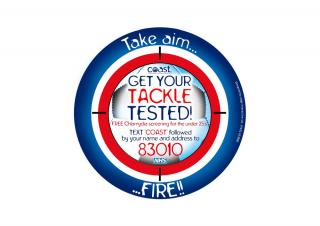

Tools Used
Initiated By
- North East Lincolnshire Care Trust Plus
- National Health Service (NHS), North Lincolnshire
Partners
- GP surgeries (clinics)
- Local football teams
- Barton on Humber College and North Lindsey College
- Viking FM Radio
Results
In 2007/08 (Year 1) North East Lincolnshire (NEL) screened 7.5% of its 15-24 year old population (higher than the England average of 4.9%) and North Lincolnshire (NL) screened 3.8%.
In 2008/09 (Year 2) NEL screened 17.6% (reaching the 2009 target of 17%) and NL screened 13.2%.
In 2009/10 (Year 3) NEL screened 26.4% (exceeding the 2010 target of 25%) and NL screened 20.4%.
Chlamydia Outreach Advice Screening and Treatment (COAST)
COAST’s “upstream” changes made Chlamydia testing, notification and treatment more attractive, thereby increasing testing rates remarkably over the long term.
Background
Note: To minimize site maintenance costs, all case studies on this site are written in the past tense, even if they are ongoing as is the case with this particular program.
In 2003, Chlamydia was the most common sexually transmitted infection (STI) in the United Kingdom, with up to 1 in 12 sexually active 15-24 year olds testing positive. If left untreated, infection can have serious consequences, including ectopic pregnancy and infertility.
In 2003, the England Department of Health (DH) set up the National Chlamydia Screening Programme (NCSP) to ensure that all sexually active young people under 25 were aware of Chlamydia and its effects, and to have access to free and confidential testing services. Primary care trusts had the responsibility to deliver local screening programs, which led to the development of the COAST program.
Established and funded by North East Lincolnshire Care Trust Plus and NHS North Lincolnshire, COAST offered free Chlamydia screening and treatment at more than 100 sites to 15-24 year olds living in Northern Lincolnshire. The program also provided an option to order a free do-it-yourself (DIY) testing kit online or by text. The COAST team sent results by text, email or mail as requested by the person being tested, and offered to notify sexual partners on behalf of those who tested positive.

Map courtesy mapcruzin.com
Setting Objectives
The objectives of the COAST program were set by the England Department of Health: Screen 15% of all 15-24 year olds living in Northern Lincolnshire for Chlamydia in the first year (2007), then increase screening rates to 17% per cent in 2008/09, 25% in 2009/10, and 35% by 2010/11.
Getting Informed
The COAST team first consulted with local health, sexual health and wellbeing service providers to learn from their experiences on how best to engage with young people.
A steering group was then formed with representatives from public health, health promotion, young peoples’ services, schools, youth centres, the Youth Offending Team, the Drug Intervention Programme, pharmacies and general practitioners (GPs). The team set a six-month timescale to conduct research and review existing data on Chlamydia screening, and to develop the screening program.
Stemming from these consultations, the COAST team conducted three focus groups in a variety of settings, including a community café, a drop-in centre and a local college. This research helped the team understand young people’s attitudes towards Chlamydia screening.
Between late 2006 and early 2007, 30 one-on-one interviews were conducted with students from Barton on Humber and North Lindsey College to establish the most effective methods of getting the Chlamydia screening message across and encouraging young people to use the service.
Targeting the Audience
Research highlighted that, amongst the target audience (15-24 year olds), uptake of Chlamydia screening was quite low among males; interventions, therefore, were developed specifically for them.
Screening sites and service providers were identified as a secondary target audience. The team recognized that this audience included important stakeholders that would help COAST engage with the primary target audience.
Barriers
The steering group identified barriers that service providers would face in offering screening on behalf of COAST. These included a lack of time, heavy workloads and competing priorities. The COAST team had to make the screening process as simple as possible for frontline staff and provide a total "patient care pathway," where COAST would handle the treatment and contact for those who tested positive.
Information from the focus groups and interviews identified the following perceived and actual barriers facing the primary target audience:
- Lack of knowledge about screening sites
- Belief that screening is expensive or involves an embarrassing examination
- Fear of testing positive and having to tell previous partners
- Worry that others would find out about the test when the results are delivered
- Young people said they wanted a "cool," nurse-led service that did not involve any "men in white coats." They wanted one point of contact for advice, screening and treatment, and treatment had to be quick, easy and conveniently located. To reach the greatest number of young people, screening had to be offered in a variety of settings, such as health care clinics, as well as non-health venues such as colleges, youth centres and sports clubs. Since young people worried about informing previous sexual partners if they tested positive for Chlamydia, they wanted support in this area.
Motivators
The team discovered that "peace of mind" was an important motivator for young people to get tested. However, without a service that met their needs, this would not be enough in itself.
Delivering the Program
The COAST program began in 2007 with a team that included a program coordinator, three health advisors and three administrator support positions.
The team's research on barriers and motivators for both the primary and secondary target audiences informed program development and delivery.
Secondary Audience
Service providers (i.e., GP surgeries/clinics) that joined the program were offered benefits to incentivize participation. For example, staff would not need to generate prescriptions for patients aged 15-24, make referrals to sexual health units, or worry about tracing partners registered with other GP clinics. (Incentives; Overcoming Specific Barriers)
To make the screening process as simple as possible, nurses were given all the necessary tools in what was called a "clinic in a bag."
The COAST team managed all client treatments and follow-up of sexual partners for those who tested positive. The COAST team used the existing electronic patient record system already used by local GPs to link all primary care users and ensured that records could be accessed for free by GPs. As an additional incentive, the most active screening sites in each primary care trust were offered free attendance to the annual NCSP conference, including free travel and overnight accommodation.
Primary Audience
To make screening as accessible and convenient as possible for young people, DIY testing kits were made available from collection points at venues that had high foot traffic of young people (e.g., youth centres, drop-in centres, colleges, etc.). This alleviated one of the identified barriers that the procedure would entail having an embarrassing conversation with a "professional." Rather, the young people completed the test on their own (peeing into the pot provided, completing the lab form, then sending it in anonymously using a pre-paid envelope). (Overcoming specific barriers)
The testing kits included a pictorial step-by-step guide for those who had low literacy skills or whose first language was not English. (Overcoming specific barriers; Vivid, credible communications)
Results were sent to patients within seven working days via post, email, telephone or text message, whichever they preferred. If clients requested a text message and their results prove negative, they would be sent the message "The COAST is clear." (Feedback, Overcoming Specific Barriers)
Those who tested positive were asked to contact the COAST team for free treatment (a course of antibiotics) at a time and place of their choosing. COAST nurses also helped to track down and inform patients' previous sexual partners to encourage them to be tested for Chlamydia. Again, this overcame a barrier identified during the research phase. (Overcoming specific barriers)
Many of the young people consulted during the research lacked knowledge about the Chlamydia screening process. Outreach activities and tutorials were, therefore, delivered at local colleges to educate students about what the test involved, where it was offered, and why they should get tested. During these tutorials, students were given the option of being screened right there and then. (Overcoming Specific Barriers; Vivid, credible communications)
Branding
A local graphic design company was commissioned to create sample logos and images, which were then voted on by young people. This process revealed a gap between professional opinions of what would be effective and what users would actually relate to and like.
Branded promotional material, such as posters, leaflets and beer mats, were distributed at locations where young people hung out (hairdressing, nail and tanning salons for females; football grounds and pubs for males). Advertisements about the program were also broadcast on local radio channels popular with young people.
Campaigns
Since males were a key target group, promotional materials were specifically developed for them using the phrase "Get your tackle tested" and the image of a naked male torso with a football strategically placed over his "tackle."
COAST worked with two local football teams to publicize the program with full-page advertisements placed in match day programmes and laminated posters put up in all toilets around the grounds. A "Get Your Tackle Tested" match was held, during which players wore t-shirts with the slogan and COAST logo on the back, and young volunteers went out into the crowd to talk to young males. (Norm appeals)
Urinal stickers were developed that changed colour when urinated on to reveal a helpful reminder to "Get Your Tackle Tested." (Prompts)

From September to December 2007, COAST ran a "Wee for a Wii" competition, where any young person tested for Chlamydia during those months was entered in a prize draw for a Wii games console. (Incentives)
During summer 2009, COAST launched the "Pee 4 Pants" campaign at the Freshers’ Fayre (akin to "frosh week" in North America) at Grimsby Institute and at the Grimsby Town FC (football club) home game. Free branded underwear (panties and boxer shorts) were given to all young people who were screened. The underwear was branded "My tackle’s been tested" for young men and "Squeaky Clean" for young women, with logos woven into the waistband. (Incentives)

“This [was] a fun way to encourage young people to access Chlamydia screening," said Paul Watson, COAST coordinator. "We hope wearing the pants will be a reminder of the importance of using condoms and, of course, ensure that they undertake regular Chlamydia screening.” (Prompts)
Information Technology
The COAST website was launched in 2008 and allowed people to request free testing kits online. This was followed by a "text to test" scheme, launched in spring 2009, which allowed young people to request a freepost kit by texting COAST, their name and address to 83010.
Financing the Program
COAST obtained Choosing Health funding (part of the UK's National Health Service) and its annual budget was set at £282,255 (~$455,545 CAD as of May 2014).
Measuring Achievements
COAST was monitored and evaluated in a number of ways.
- Screening data (age and gender of those screened, number of screens administered by individual screening sites) was collected on a quarterly basis for the NCSP, allowing this information to be compared against annual targets and previous performance.
- User surveys were conducted on several occasions at local colleges and schools to gather information on topics such as awareness of sexually transmitted infections, treatment preferences and media channels used.
- 21-year old Ben Kirton was recruited to assess COAST’s materials and website from a young person’s perspective, analyze results from patient satisfaction surveys and "mystery shop" at a number of screening sites. These findings were formally presented, together with the screening rates, to the steering group and to key stakeholders. Ben was subsequently nominated for the 2011 Brook Young Person of the Year Award. (Brook Young is the country's largest young people's sexual health charity.)
- An audit tool was developed to benchmark COAST's work against other local screening programs in the region.
- The COAST team provided regular feedback to the steering group and service providers via monthly newsletters and visits to screening sites at least twice a year. Every month the team also sent each site its screening figures, so that providers could see the impact they were having and track their performance. In addition, the COAST team held monthly meetings with the steering group to ensure that all the elements of the program were prepared and delivered in a coordinated fashion.
- An audit was also carried out in 2008 with those people who had screened positive for Chlamydia. Results revealed a high degree of unprotected sex with multiple partners in North East Lincolnshire and North Lincolnshire. This information was used to improve delivery of the C-Card scheme, a program that provides free condoms to those aged 13-24, and C-cards were given to all those who tested positive for Chlamydia under the COAST program.
Results
In 2007/08 (Year 1) North East Lincolnshire (NEL) screened 7.5% of its 15-24 year old population (higher than the England average of 4.9%) and North Lincolnshire (NL) screened 3.8%.
In 2008/09 (Year 2) NEL screened 17.6% (reaching the 2009 target of 17%) and NL screened 13.2%.
In 2009/10 (Year 3) NEL screened 26.4% (exceeding the 2010 target of 25%) and NL screened 20.4%.
The following chart shows the data for testing kits requested and returned (the blue and black lines) as well as the return rate (the green line) for freetest.me, which is the testing program that carried on from COAST. The dateline runs from November 2008 on the left, to January 2014 on the right. The return rate has stayed steady, while there has been a steady increase in the rate of testing kits that were ordered and returned.
Selected campaign results
During the "Get Your Tackle Tested" football match, more than 70 requests were made for the DIY testing kits.
"Pee for Pants" was COAST’s most successful campaign, producing three versions of the promotional underwear. Special themed underwear was also designed for the 2010 World Cup.
Online requests for free DIY kits proved popular with young people who were employed full-time and did not have access to traditional screening sites, as well as those who lived in rural areas. It also allowed users to request a kit at any time, day or night.
The COAST team visited various local colleges to speak with groups and offered Chlamydia screening on site. Outreach activities resulted in an average of 50% of students in each tutorial taking a Chlamydia test.
Local college students were recruited to develop a DVD as part of their media studies about COAST and the screening and treatment process. Launched in summer 2009, the DVD was available on the COAST website and circulated to all partner organizations that deliver sex and relationship education in local secondary schools.
Contacts
Paul Watson
COAST Team Coordinator / Nurse Advisor
North East Lincolnshire Care Trust Plus; NHS North Lincolnshire
Tel: 01472 255 216
paul.kirton-watson@nhs.net
Tim Alston
Preventx
tim@preventx.com
http://www.freetest.me/
Notes
Lessons Learned
Fit the service to the client, not vice-versa
Watson said that COAST was fortunate in being able to build the program from scratch with the target audience in mind. This avoided the typical challenges and resistance to change associated with existing services and programs.
“For me, it always had to work for young people," he said. "I had to fit the service around them, rather than expect them to fit into a service.”
Young people also indicated early on that they preferred to receive results by text message. This was not only convenient for the audience, it was also the least costly option for the program.
Incentives work
COAST's success showed the value of incentives and suggested that smaller guaranteed gifts (such as the branded underwear) were more effective than a prize draw for a larger, more valuable reward (such as a Wii games console).
"The most successful has been things like "Pee for Pants"," said Watson. "We’re on our third lot now and they do make a difference because when we’ve gone into colleges without them the uptake hasn’t been as great. Incentives for testing do work.”
Brand value
COAST found that young people value consistency in brand image. When the team considered changing its branding and imagery, consultations with young people found that, not only did they recognize the brand, but they knew what it stood for and did not want it changed.
DIY kits were well received
The free DIY kits that could be sent in postage-paid envelopes were very successful at engaging and motivating young people to get tested. Clients preferred to do the test at home, which was quick, easy and painless, without any embarrassing visit to a health care professional.
Value-added offerings
COAST guaranteed results within seven days of receiving the test, which was well received by the target audience. The partner notification service, offered by COAST, was also more effective if undertaken by the nursing team rather than the young person.
Notes
The COAST program was subsequently expanded and administered by www.freetest.me.
This case study was written by Jay Kassirer and Heather Bowen Ray in 2014, with funding from the Public Health Agency of Canada.